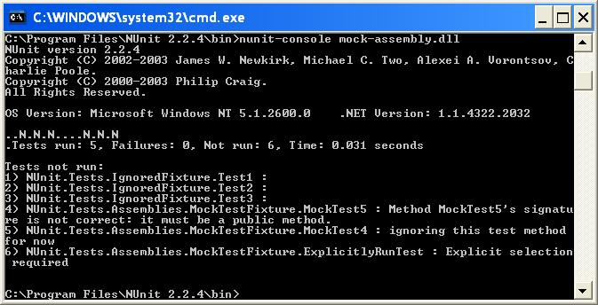

NUnit-Console
The nunit-console.exe program is a text-based runner and can be used when you want to run all your tests and don’t need a red/yellow/green indication of success or failure.
It is useful for automation of tests and integration into other systems. It automatically saves its results in XML format, allowing you to produce reports or otherwise process the results. The following is a screenshot of the console program.

In this example, nunit-console has just run the tests in the mock-assembly.dll that is part of the NUnit distribution. This assembly contains a number of tests, some of which are either ignored or marked explicit. The summary line shows the result of the test run. Click here to see the XML produced for this test run.